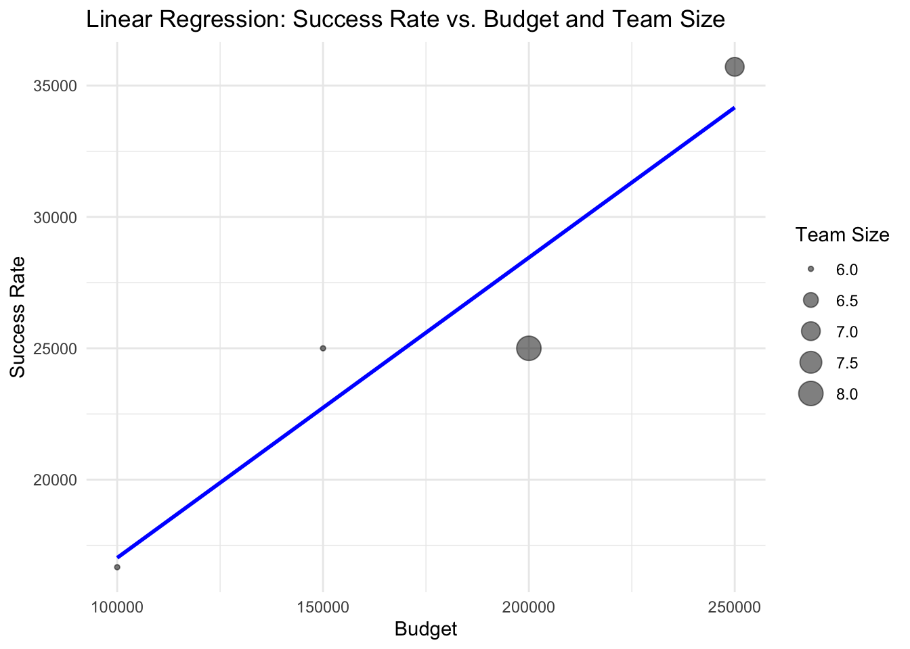

# Set CRAN mirror
options(repos = c(CRAN = "https://cran.rstudio.com/"))
# Install packages without showing messages
install.packages("DBI", quiet = TRUE)
install.packages("RSQLite", quiet = TRUE)
install.packages("knitr", quiet = TRUE)
install.packages("quarto", quiet = TRUE)
install.packages("shiny", quiet = TRUE) # For the interactive dashboard
install.packages("tidyverse", quiet = TRUE) # Useful for data manipulation and visualizationICA2 Interactive RDBMS data with Quarto
PART A
Introduction
Part A of this Quarto Notebook demonstrates three core SQL queries and three SQL concepts.
SQL Queries - Importing and Processing of Data
# Load necessary libraries
library(DBI)
library(RSQLite)
library(DT)
library(knitr)
# Connect to SQLite database
con <- dbConnect(RSQLite::SQLite(), "/Volumes/ANIMATION/DkIT_MSc/YEAR_1__SEMESTER_1/DATA_ANALYTICS_Dr_Muhammad_Adil_Raja/I-CA2_LinearRegression/ICA2_RDBMS_Linear_Regression_TishLL/RDBMS_Linear_Regression/2023_DAIE_ICA_2_TishLL/ICA_2023.sqlite")
# List all tables
dbListTables(con)[1] "Assets" "AssetsDevelopers" "Customers"
[4] "Developers" "ProjectDevelopers" "Projects"
[7] "Timelines" # Query the database
projects_table <- dbGetQuery(con, "SELECT * FROM Projects")
assets_table <- dbGetQuery(con, "SELECT * FROM Assets")
timelines_table <- dbGetQuery(con, "SELECT * FROM Timelines")
customers_table <- dbGetQuery(con, "SELECT * FROM Customers")
developers_table <- dbGetQuery(con, "SELECT * FROM Developers")
projectdevelopers_table <- dbGetQuery(con, "SELECT * FROM ProjectDevelopers")
assetsdevelopers_table <- dbGetQuery(con, "SELECT * from AssetsDevelopers")To view the supplied data - Go to Supplied Data
1. Total Budget and Count of Projects per Country
List the total budget allocated for projects in each country, along with the count of
projects per country. Display sorted by the total budget in descending order.
# Load necessary libraries
library(DBI)
library(RSQLite)
# Connect to SQLite database
con <- dbConnect(RSQLite::SQLite(), "/Volumes/ANIMATION/DkIT_MSc/YEAR_1__SEMESTER_1/DATA_ANALYTICS_Dr_Muhammad_Adil_Raja/I-CA2_LinearRegression/ICA2_RDBMS_Linear_Regression_TishLL/RDBMS_Linear_Regression/2023_DAIE_ICA_2_TishLL/ICA_2023.sqlite")
# Join the Tables and Perform the Query
query <- "
SELECT
c.CustomerCountry AS country,
SUM(p.budget) AS total_budget,
COUNT(*) AS project_count
FROM
Projects p
JOIN
Customers c ON p.CustomerID = c.CustomerID
GROUP BY
c.CustomerCountry
ORDER BY
total_budget DESC;
"
# Execute the query and store the result
Task1 <- dbGetQuery(con, query)
print(Task1) country total_budget project_count
1 Spain 650000 2
2 UK 550000 2
3 Netherlands 400000 1
4 Italy 250000 1
5 France 200000 1
6 Germany 150000 12. Average Development Time for Projects, Categorized by the Number of Assets Used.
List the average development time for projects, categorized by the number of assets used.
Note: the results table displays the number of days for each of the four completed projects. However, this is slightly inaccurate as one of the dates (for the completion of Urban Adventure) is listed as the 31st of February, which does not exist.
# Load necessary libraries
library(DBI)
library(RSQLite)
# Connect to SQLite database
con <- dbConnect(RSQLite::SQLite(), "/Volumes/ANIMATION/DkIT_MSc/YEAR_1__SEMESTER_1/DATA_ANALYTICS_Dr_Muhammad_Adil_Raja/I-CA2_LinearRegression/ICA2_RDBMS_Linear_Regression_TishLL/RDBMS_Linear_Regression/2023_DAIE_ICA_2_TishLL/ICA_2023.sqlite")
# Calculate the Development Time and Count Assets
query <- "
SELECT
p.ProjectID,
COUNT(a.ProjectID) AS number_of_assets,
AVG(julianday(p.EndDate) - julianday(p.StartDate)) AS average_development_time
FROM
Projects p
JOIN
Assets a ON p.ProjectID = a.ProjectID
WHERE
p.Status = 'Completed'
GROUP BY
p.ProjectID
"
# Execute the query and store the result
Task2 <- dbGetQuery(con, query)
# Print the result stored in Task2
print(Task2) ProjectID number_of_assets average_development_time
1 101 10 272
2 102 11 91
3 103 11 272
4 104 10 1533. List the Top Three Developers
List the top three developers based on the number of successful projects they’ve been
involved in. Display the results.
# Load necessary libraries
library(DBI)
library(RSQLite)
# Connect to SQLite database
con <- dbConnect(RSQLite::SQLite(), "/Volumes/ANIMATION/DkIT_MSc/YEAR_1__SEMESTER_1/DATA_ANALYTICS_Dr_Muhammad_Adil_Raja/I-CA2_LinearRegression/ICA2_RDBMS_Linear_Regression_TishLL/RDBMS_Linear_Regression/2023_DAIE_ICA_2_TishLL/ICA_2023.sqlite")
# Query to Identify Top Three Developers
query <- "
SELECT
d.DeveloperID,
COUNT(*) AS successful_projects
FROM
ProjectDevelopers pd
JOIN
Projects p ON pd.ProjectID = p.ProjectID
JOIN
Developers d ON pd.DeveloperID = d.DeveloperID
WHERE
p.Status = 'Completed'
GROUP BY
d.DeveloperID
ORDER BY
successful_projects DESC
LIMIT 3;
"
# Execute the query and store the result
Task3 <- dbGetQuery(con, query)
# Print the result stored in Task3
print(Task3) DeveloperID successful_projects
1 213 2
2 214 1
3 201 1# Disconnect from the Database
dbDisconnect(con)SQL Concepts - Importing and Processing of Data
library(DBI)
library(RSQLite)
library(kableExtra)
# Connect to the SQLite database
con <- dbConnect(RSQLite::SQLite(), "/Volumes/ANIMATION/DkIT_MSc/YEAR_1__SEMESTER_1/DATA_ANALYTICS_Dr_Muhammad_Adil_Raja/I-CA2_LinearRegression/ICA2_RDBMS_Linear_Regression_TishLL/RDBMS_Linear_Regression/2023_DAIE_ICA_2_TishLL/ICA_2023.sqlite")1. SELECT with LIKE and OR
# Execute the first query
query1 <- dbGetQuery(con, "SELECT CustomerName, CustomerCity FROM Customers WHERE CustomerName LIKE 'N%' OR CustomerCountry LIKE '%UK';")
# Display results
kable(query1, caption = "Customers whose names start with 'N' or countries contain 'UK'") %>%
kable_styling()| CustomerName | CustomerCity |
|---|---|
| Vertex Games | London |
| Nebula Creations | Rome |
| Nova Software | Amsterdam |
| Infinity Designs | Edinburgh |
2. SELECT with DISTINCT and ORDER BY
# Execute the second query with alphabetical ordering
query2 <- dbGetQuery(con, "SELECT DISTINCT ProjectName FROM Projects ORDER BY ProjectName ASC;")
# Display results
kable(query2, caption = "Project names, ordered alphabetically") %>%
kable_styling()| ProjectName |
|---|
| Cybernetic Dreams |
| Desert Survival |
| Frozen Frontier |
| Galaxy Quest |
| Mystic Realms |
| Ocean Odyssey |
| Shadow Legacy |
| Urban Adventure |
3. Subquery with SELECT
# Execute the query with subquery
query3 <- dbGetQuery(con, "SELECT ProjectName, Budget FROM Projects WHERE Budget > (SELECT AVG(Budget) FROM Projects);")
# Display results
kable(query3, caption = "Projects with above average budget") %>%
kable_styling()| ProjectName | Budget |
|---|---|
| Ocean Odyssey | 300000 |
| Desert Survival | 350000 |
| Frozen Frontier | 400000 |
| Cybernetic Dreams | 450000 |
Conclusion
Part A of this notebook has demonstrated three core SQL queries and three SQL concepts with practical examples.
# Disconnect from the Database
dbDisconnect(con)PART B
Linear Regression
Introduction
I was tasked with utilising the provided dataset to apply linear regression analysis to understand trends or patterns within the game development lifecycle.
1. Model:Perform linear regression to predict the success rate of a project based on its budget and team size and present the data in an appropriate plot.
Step 1: Calculation of possible team size
# Load necessary libraries
library(DBI)
library(RSQLite)
# Connect to SQLite database
con <- dbConnect(RSQLite::SQLite(), "/Volumes/ANIMATION/DkIT_MSc/YEAR_1__SEMESTER_1/DATA_ANALYTICS_Dr_Muhammad_Adil_Raja/I-CA2_LinearRegression/ICA2_RDBMS_Linear_Regression_TishLL/RDBMS_Linear_Regression/2023_DAIE_ICA_2_TishLL/ICA_2023.sqlite")
# 1a: Calculate possible team size
# Define the SQL query
query <- "
SELECT
a.ProjectID,
COUNT(DISTINCT ad.DeveloperID) AS TeamSize
FROM
Assets a
JOIN
AssetsDevelopers ad ON a.AssetID = ad.AssetID
GROUP BY
a.ProjectID;
"
# Execute the query and store the result
teamsize <- dbGetQuery(con, query)
# Display the result
print(teamsize) ProjectID TeamSize
1 101 6
2 102 8
3 103 6
4 104 7To calculate success rate, I divided budget by team size
# Load necessary libraries
library(DBI)
library(RSQLite)
library(ggplot2)
# Step 1: Connect to SQLite database
con <- dbConnect(RSQLite::SQLite(), "/Volumes/ANIMATION/DkIT_MSc/YEAR_1__SEMESTER_1/DATA_ANALYTICS_Dr_Muhammad_Adil_Raja/I-CA2_LinearRegression/ICA2_RDBMS_Linear_Regression_TishLL/RDBMS_Linear_Regression/2023_DAIE_ICA_2_TishLL/ICA_2023.sqlite")
# Extract the relevant data for analysis
data <- dbGetQuery(con, "
SELECT
p.ProjectID,
p.ProjectName,
p.Budget,
COUNT(DISTINCT ad.DeveloperID) AS TeamSize
FROM
Projects p
LEFT JOIN
Assets a ON p.ProjectID = a.ProjectID
LEFT JOIN
AssetsDevelopers ad ON a.AssetID = ad.AssetID
WHERE
p.Status = 'Completed'
GROUP BY
p.ProjectID, p.ProjectName, p.Budget
")
# Calculate SuccessRate
data$SuccessRate <- data$Budget / data$TeamSizeStep 2: Perform Linear Regression
# Fit the linear regression model
model <- lm(SuccessRate ~ Budget + TeamSize, data = data)
# Display the summary of the model
summary(model)
Call:
lm(formula = SuccessRate ~ Budget + TeamSize, data = data)
Residuals:
1 2 3 4
-357.1 119.0 476.2 -238.1
Coefficients:
Estimate Std. Error t value Pr(>|t|)
(Intercept) 2.345e+04 2.870e+03 8.173 0.0775 .
Budget 1.500e-01 7.897e-03 18.995 0.0335 *
TeamSize -3.571e+03 5.324e+02 -6.708 0.0942 .
---
Signif. codes: 0 '***' 0.001 '**' 0.01 '*' 0.05 '.' 0.1 ' ' 1
Residual standard error: 652.1 on 1 degrees of freedom
Multiple R-squared: 0.9977, Adjusted R-squared: 0.993
F-statistic: 214.5 on 2 and 1 DF, p-value: 0.04822Step 3: Present the Data in an Appropriate Plot
# Create a scatter plot with regression lines
ggplot(data, aes(x = Budget, y = SuccessRate)) +
geom_point(aes(size = TeamSize), alpha = 0.5) +
geom_smooth(method = "lm", se = FALSE, color = "blue") +
labs(title = "Linear Regression: Success Rate vs. Budget and Team Size",
x = "Budget",
y = "Success Rate",
size = "Team Size") +
theme_minimal()`geom_smooth()` using formula = 'y ~ x'
2. Interpret:Interpret the model coefficients and discuss what insights they provide about game development.
Interpretation
Intercept:
Estimate: 23450
Interpretation: The Intercept (23450) represents the estimated success rate when both Budget and TeamSize are zero. While this scenario isn’t really practical, it provides a baseline for the model.
Budget:
Estimate: 0.150
Interpretation: For every unit increase in the Budget, the SuccessRate increases by approximately 0.15, assuming TeamSize remains constant. This positive relationship indicates that higher budgets generally lead to higher success rates in game development projects, which makes sense as more resources can enhance quality and efficiency.
TeamSize:
Estimate: -3571
Interpretation: For every additional team member, the SuccessRate decreases by approximately 3571, assuming the Budget remains constant. This negative relationship might be unexpected but could suggest issues such as coordination challenges, diluted responsibility, or diminishing returns with larger teams.
Residuals
Residuals represent the differences between observed and predicted values of the SuccessRate. They help us to understand the model’s accuracy:
Small residuals indicate the model’s predictions are close to the observed values.
Large residuals might indicate outliers or areas where the model could be improved.
Model Summary
Residual Standard Error (RSE): 652.1
RSE measures the average amount that the response variable deviates from the fitted values. Lower RSE indicates a better fit.
Multiple R-squared: 0.9977
This value indicates that 99.77% of the variability in the SuccessRate is explained by the Budget and TeamSize variables combined. This is a very high value, which suggests an excellent model fit.
Adjusted R-squared: 0.993
Adjusted R-squared accounts for the number of predictors in the model. An adjusted R-squared of 0.993 is still very high, reinforcing the model’s reliability.
F-statistic: 214.5
A high F-statistic with a low p-value (0.04822) indicates that the model is statistically significant.
Insights for Game Development
Budget: Investing in higher budgets tends to increase the success rate of game development projects. Ensuring adequate funding can help acquire better tools, talent, and other essential resources.
Team Size: The negative coefficient for team size suggests potential issues with larger teams. It might be beneficial to explore optimal team sizes that maximise efficiency without causing coordination issues.
Resource Optimisation: Balancing budget and team size is crucial. Over-reliance on either factor might not yield the best results.
Reliability and Outliers
High R-squared: Indicates the model explains almost all the variability in the data.
Residual Analysis: The residuals and Cook’s distance should be examined further for outliers and influential points that could impact the model’s accuracy.
Overall, the model provides valuable insights into the impact of budget and team size on project success rates, emphasising the importance of resource allocation and team management in game development.
3. Discuss:Comment on the reliability of the the linear regression model and any outliers present in the data.
Reliability of the Linear Regression Model
Residual Standard Error (RSE):
- The RSE is 652.1, which indicates the average amount that the observed success rates deviate from the predicted values. In this context, a lower RSE suggests a better model fit, indicating that the model predictions are relatively close to the actual data points.
- Multiple R-squared (R²):
- The R-squared value is 0.9977, meaning that approximately 99.77% of the variability in the success rates is explained by the budget and team size. This is an exceptionally high value, indicating the model fits the data very well and that budget and team size are significant predictors of success rate.
- Adjusted R-squared:
- The adjusted R-squared is 0.993, which accounts for the number of predictors in the model. This value is very high, reinforcing the model’s reliability and indicating that the model explains a substantial portion of the variability in success rates.
- F-statistic:
- The F-statistic is 214.5 with a p-value of 0.04822. This test evaluates the overall significance of the regression model. The low p-value (less than 0.05) indicates that the model is statistically significant, and there is a very low probability that the observed relationship between the predictors and the success rate is due to random chance.
Analysis of Outliers
Residuals represent the differences between the observed and predicted values of the success rate.
Residuals Analysis:
- The residuals vary from -357.1 to 476.2. The presence of relatively large residuals suggests there may be some data points where the model does not fit perfectly.
Cook’s Distance:
- To identify influential data points, we calculate Cook’s distance. Points with a high Cook’s distance might disproportionately affect the model, these points should be investigated as potential outliers or influential observations.
Potential Outliers:
- Based on the residuals, there appear to be some deviations from the predicted values, suggesting the presence of outliers. These outliers could be projects with unusual characteristics or measurement errors. Investigating these can provide insight into special cases or data quality issues.
Conclusion
The linear regression model demonstrates high reliability, with an excellent fit to the data as indicated by the high R-squared and adjusted R-squared values. The model’s significance is supported by the F-statistic and low p-value, indicating a strong relationship between the predictors (budget and team size) and the success rate.
The presence of some large residuals suggests that there are outliers or influential data points that could impact the model’s accuracy. These should be investigated further to understand their nature and potential impact on the model.
While the model is highly reliable and explains most of the variability in success rates, consideration of outliers and influential points is essential for ensuring the robustness and validity of the conclusions drawn.
PART C
Shiny Application
As much as I really wanted to create interactive plots, no matter what I did, I just couldn’t get this to work. I spent over two full days going around in circles, with error message after error message. Unable to get the file structure working on my local machine, I first tried to use Posit and then Shinyapps.io, but the free service was deprecated last month. With so many other pressing commitments, disappointingly on this occasion I have to admit defeat. I am, however, pleased with the data tables I have created at the bottom of this Notebook, with their search functions and multiple pages.
PART D
Technology Exploration
I embarked on this project with limited prior experience and instruction in RStudio. My journey of learning and executing this project has been largely self-directed, utilising resources from LinkedIn Learning, YouTube, and other online platforms. Although I had never used tools such as Quarto, Shiny, and SQL before, I found Quarto particularly enjoyable and am proud of the progress I have made.
Coming from a background in print and digital graphics, venturing into data analytics and programming has been both challenging and rewarding. I have thoroughly enjoyed the process of importing data into R, joining different tables, and manipulating the data to perform the required analyses. While I acknowledge that I have not fully met all the requirements for this assignment, I am satisfied with what I have accomplished given my self-taught approach and the time I have available.
This experience has been immensely valuable in expanding my technical skills.
Supplied Data
Projects Table
datatable(projects_table, caption = "Projects Table")Assets Table
datatable(assets_table, caption = "Assets Table")Timelines Table
datatable(timelines_table, caption = "Timelines Table")Customers Table
datatable(customers_table, caption = "Customers Table")Developers Table
datatable(developers_table, caption = "Developers Table")Project Developers Table
datatable(projectdevelopers_table, caption = "Project Developers Table")Assets Developers Table
datatable(assetsdevelopers_table, caption = "Assets Developers Table")# Disconnect from the database
dbDisconnect(con)